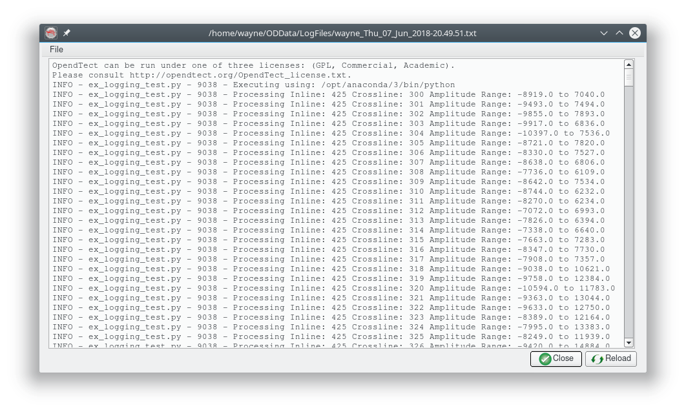

Introduction
It is possible to write information to the OpendTect logfile from inside a Python ExternalAttrib - External Attribute script.
The global variable xa.logH (assuming the extattrib module has been imported using import extattrib as xa) is a Python logger object.
An Example

On line 18 the Python logger is modified by adjusting the severity level of messages that will appear in the log file. By default only CRITICAL, ERROR and WARNING messages will be written.
On line 22 a message is written to the logfile showing the full path to the Python interpreter executing the script. As this line is in the Compute Loop Initialisation section it is only written at each invocation of the script.
On line 32 a message is written that identifies the location, minimum and maximum of the trace being processed. As this line is in the Compute Loop a message is output for every trace processed.
The Result
